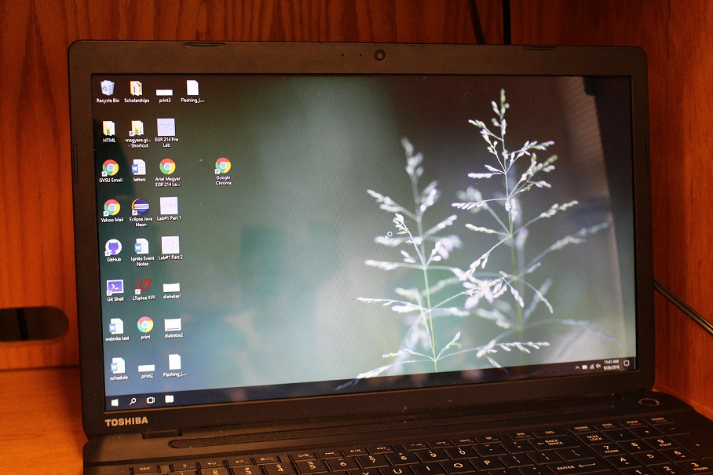
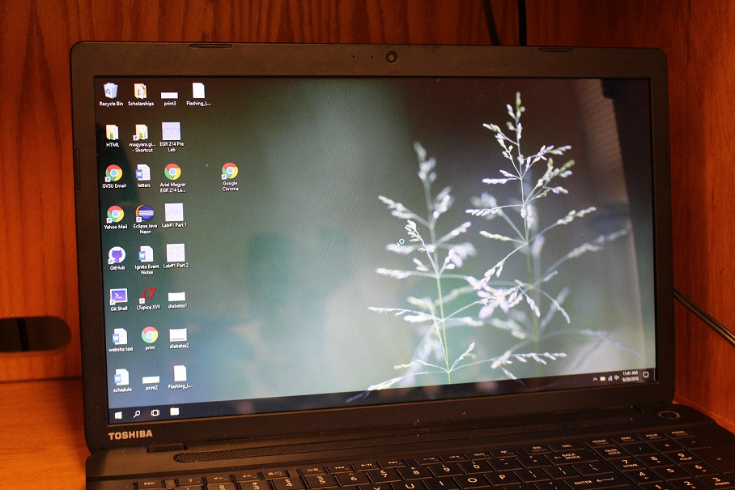

I repaired the screen to the my Toshiba Satellite C75D laptop after it broke in a fatal incedent involving being shoved into a plane inside a suitcase. The first step was removing the screen from the computer which required turning off the machine and removing the battery for safety. I then removed the screws attaching the border of the screen and used a prying tool to unhook the small plastic hinges attaching the border around the screen to the back casing as shown below.
 After the casing was off I located the part number of the screen (LP173WD1). Luckily, I found a replacement on Amazon.com for only $55.00. I verified the size and ordered it. When the new screen arrived I got to work installing. I detached the wire on the back of the broken screen connecting it to the motherboard and removed the screws form the metal holders on the sides.
After the casing was off I located the part number of the screen (LP173WD1). Luckily, I found a replacement on Amazon.com for only $55.00. I verified the size and ordered it. When the new screen arrived I got to work installing. I detached the wire on the back of the broken screen connecting it to the motherboard and removed the screws form the metal holders on the sides.
 Next the new screen was ready to be put into place. I plugged it into the motherboard, re-attached all of the screws, and clicked the casing back into place. After putting in the battery and turning on the computer, the screen worked once again!

Next the new screen was ready to be put into place. I plugged it into the motherboard, re-attached all of the screws, and clicked the casing back into place. After putting in the battery and turning on the computer, the screen worked once again!
